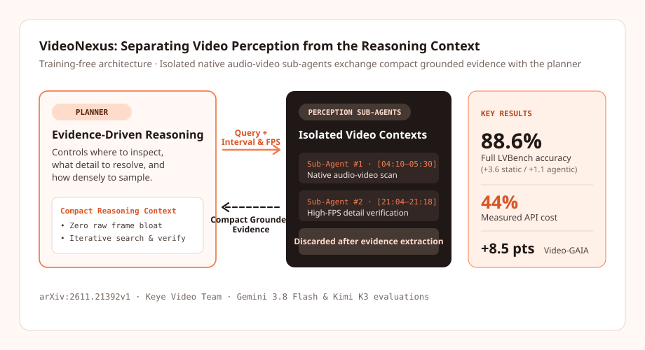

VideoNexus: Video Perception Beyond the Reasoning Context VideoNexus：将视频感知从推理上下文中解耦
A training-free framework that delegates native audio-video inspection to isolated perception sub-agents and exchanges compact, temporally grounded evidence with the planner.
免训练的长视频智能体框架：将原生音视频细节感知委派给独立上下文的感知子智能体，仅向规划器回传紧凑且带时间戳锚定的结构化证据。

Abstract摘要
Understanding long videos requires locating evidence, resolving visual details, and integrating observations into an answer. Even when relevant evidence is present, performing these operations within long, dense visual sequences burdens both perception and reasoning. Video agents enable selective inspection, but returning frames to the planner still accumulates visual information in its reasoning context. Delegating perception reduces this burden, yet sparse sampling can miss decisive details, and per-frame descriptions can preserve context growth.
We introduce VideoNexus, a training-free framework that separates detailed video perception from evidence-driven planning and reasoning. The planner controls where to inspect, what to resolve, and how densely to sample. Perception sub-agents process native audio-video in independent contexts and return compact, temporally grounded evidence for iterative search and verification.
长视频理解需要同时完成证据定位、细节辨识与跨片段整合。现有视频智能体虽支持选择性查看，但将原始帧不断回传至规划器仍会造成推理上下文膨胀。我们提出免训练框架 VideoNexus，将细粒度音视频感知与基于证据的规划推理彻底解耦：由规划器动态决策观测区间与帧率，感知子智能体在独立上下文中原生处理音视频并回传紧凑的时序锚定证据。
Key Highlights核心亮点
-
88.6% accuracy on full LVBench at 44% of built-in agentic API cost完整 LVBench 达 88.6%，实测 API 成本仅 44% Using Gemini 3.8 Flash for both planning and perception, VideoNexus exceeds same-backbone static ingestion by +3.6 points and built-in agentic processing by +1.1 points while slashing measured API cost to 44%. 基于 Gemini 3.8 Flash，VideoNexus 在完整 LVBench 上超越同底座静态输入 3.6 分、超越内置 agentic 模式 1.1 分，同时实测 API 成本仅为后者的 44%。
-
+8.5 points over Video-GAIA ReAct harness with Kimi K3在 Kimi K3 底座上超越 Video-GAIA ReAct 8.5 分 Compact evidence exchange generalizes cleanly across model families, outperforming official ReAct-style video harnesses while keeping the planner context lean. 紧凑证据交换机制跨模型家族稳定泛化，在保持规划器上下文精简的同时大幅提升复杂视频任务准确率。
Citation引用格式
@article{long2026videonexus,
title = {VideoNexus: Video Perception Beyond the Reasoning Context},
author = {Keye Video Team},
journal = {arXiv preprint arXiv:2611.21392},
year = {2026},
url = {https://arxiv.org/abs/2611.21392v1}
}